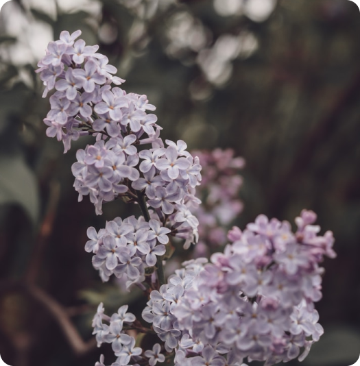
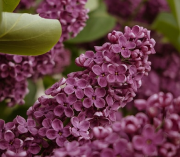
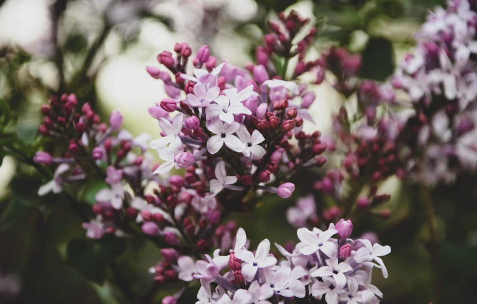
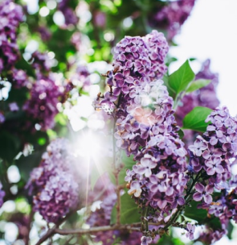

Про квітку
Існує така легенда про походження бузку. Богиня весни розбудила Сонце і його вірну супутницю Іріс (веселку), змішала промені сонця із строкатими променями веселки, почала щедро сипати їх на свіжі борозни, на луки, гілки дерев – і усюди з’являлися квіти, а земля тріумфувала від цієї благодаті. Так вони дійшли до Скандинавії, але у веселки залишилася лише лілова фарба. Незабаром тут опинилося стільки бузку, що Сонце вирішило змішати фарби на палітрі Веселки і почало сіяти білі промені – так до лілового бузку приєднався і білий.
Цікаві факти
1.У Англії бузок вважається квіткою нещастя. Старе англійське прислів’я говорить, що той, хто носить бузок, ніколи не носитиме вінчальне кільце. На Сході бузок служить символом сумного розставання і закохані вручають її один одному при розставанні назавжди.
2. Деякі сорти бузку мають опір до морозу і можуть комфортно себе почувати при температурі 60 градусів нижче нуля.
3.Своє родове назву отримала бузок на честь одного з персонажів давньогрецької міфології – наяди Сірінги. За іншою версією, назва походить від грецького слова ‘syrinx’ – трубка, що, мабуть, вказує на будову квітки.
Фото
  